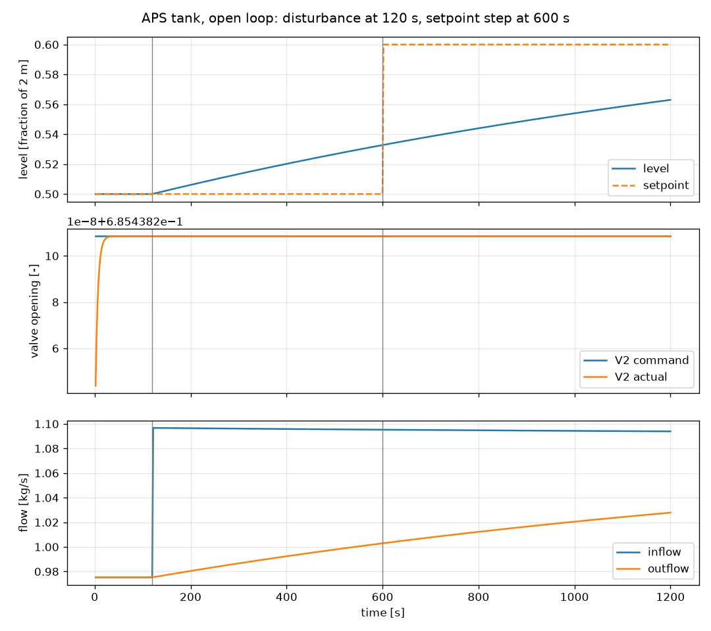

The real thing: Python driving AVEVA
The simulator above is the replica. This is the original: Python stepping the AVEVA model every 2 s through the Scripting Interface and logging each step to SQLite.
6.5 → 0.8 cmpeak level error after a feed-pressure upset
−86 %integral absolute error in the upset window
2 scontrol step, lock-step with the model
100 %repeatable: identical results run after run


An honest label: this is a demonstrator. The plant is the simulation itself, and the same loop is built to take real sensor data next.